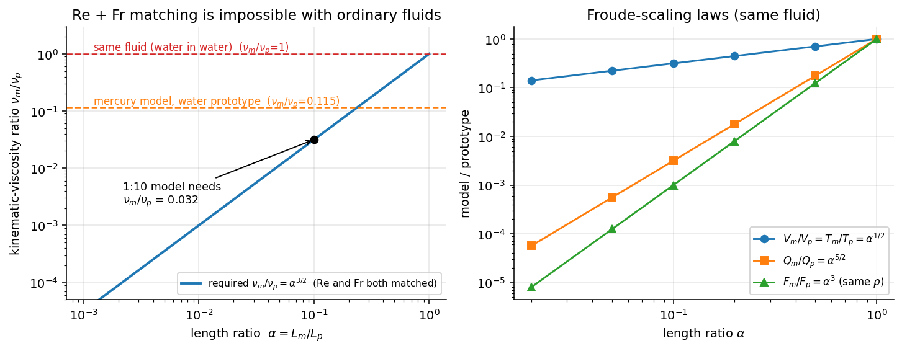

Fluid Mechanics · Dimensional Analysis and Similitude · 7 min read
Dimensional Analysis and Similitude – Formula Bank
← up: Fluid Mechanics MOC · concept note: Buckingham π Theorem · worked problems: Solved Problems · tools: Tools/fm_core.py (Pi-group solver), Tools/fm_viz.py
Equation numbers are White's. Everything marked ✓ is re-derived or recomputed in fm_core.check().
1. Dimensions · 2. Dimensional homogeneity · 3. Pi theorem · 4. Choosing repeating variables · 5. The important dimensionless groups · 6. Where the groups come from: the nondimensional equations · 7. Similarity and model laws · 8. Procedure and traps
1. Dimensions
Primary dimensions: {M L T Θ} (mass, length, time, temperature) or {F L T Θ}. They are linked by .
| Quantity | {MLT} | {FLT} | Quantity | {MLT} |
|---|---|---|---|---|
| velocity | density | |||
| acceleration, | dynamic viscosity | |||
| force | kinematic viscosity | |||
| pressure, stress | surface tension | |||
| energy, torque, work | angular velocity | |||
| power | bulk modulus | |||
| specific weight | volume flow | |||
| gas constant , specific heat | thermal conductivity | |||
| pressure gradient | speed of sound |
Angles, strains, ratios of like quantities and all Pi groups are dimensionless ().
2. Dimensional homogeneity
- It forces the form of a law (e.g. , Eq. 5.2).
- Scaling-parameter nondimensionalisation: divide every term of an equation by a combination of the scaling variables. Example, Bernoulli becomes, using as scales, with one dimensionless parameter () left over.
- Dimensionally inhomogeneous "engineering formulas" (such as ) hide a dimensional constant (units of here) and are valid in one unit system only.
3. Pi theorem
If a process involves dimensional variables and the dimensional matrix has rank (usually the number of primary dimensions needed, for {MLT}), it can be written as a relation between
Dimensional matrix. Rows = primary dimensions, columns = variables, entries = exponents. (size of the largest nonzero determinant). Example, :
Six-step procedure (White Sec. 5.3):
- List the variables (the output / dependent one included) and count them.
- Write each variable's dimensions.
- Find (rank). Initially guess the number of primary dimensions; reduce it only if no group of variables fails to form a Π.
- Select repeating variables (see §4).
- Add one non-repeating variable at a time to the repeating set, in a power product, and solve for the exponents so that every primary dimension cancels:
This gives groups. 6. Write and check that every group really is dimensionless.
Linear-algebra view. For a trial group we need with the dimensional matrix, so the groups are a basis of the null-space of and . fm_core.pi_groups(names, repeating) does step 5 symbolically.
Special cases.
- : if time never appears (e.g. cantilever deflection in {FL}) then and (Example 5.5).
- With temperature, can be 4 (heat transfer): .
- : the single group must equal a constant (e.g. Poiseuille flow , Ex. 5.4; the constant itself needs theory or experiment).
- Non-uniqueness: you may invert, multiply or raise Π groups to powers; the number is fixed. Three different repeating sets give three equivalent forms (Ex. 5.3, falling body).
4. Choosing repeating variables
| Rule | Why |
|---|---|
| Together they must contain all primary dimensions | otherwise a dimension can't cancel |
| They must not form a Π among themselves (dimensionally independent) | the exponent system must be solvable |
| Never include the dependent variable | you want it isolated in |
| Never include dimensionless variables (, ) | those are already Π groups |
| Never include two variables with the same dimensions | not independent |
| Prefer one geometric, one kinematic, one fluid property | typical choice |
| Prefer variables that appear in many groups and are easy to vary independently in tests | a group changes only one thing at a time |
Typical choices: for external flow; for turbomachinery (P5.20); for waves (P5.19); for kinetic-theory conductivity (P5.34).
5. The important dimensionless groups
White Table 5.2 (p. 297), plus a few standard additions marked *.
| Name | Definition | Ratio of effects | Matters for |
|---|---|---|---|
| Reynolds | inertia / viscous | always (laminar ⇄ turbulent) | |
| Mach | flow speed / sound speed | compressible flow () | |
| Froude | (White) | inertia / gravity | free surface, waves, ships |
| Weber | inertia / surface tension | droplets, bubbles, capillary | |
| Cavitation (Euler) | pressure / inertia | cavitation | |
| Prandtl | momentum diffusion / heat diffusion | heat convection | |
| Eckert | kinetic energy / enthalpy | dissipation, high-speed heating | |
| Specific-heat ratio | compressible flow | ||
| Strouhal | oscillation / mean transport | vortex shedding, unsteady flow | |
| Roughness ratio | wall roughness / body length | turbulent rough walls | |
| Grashof | buoyancy / viscous | natural convection | |
| Temperature ratio | heat transfer | ||
| Pressure coeff. | static p.d. / dynamic p. | aerodynamics | |
| Lift / drag coeff. | force / (dynamic p. × area) | = planform (wings) or projected frontal area (bodies) | |
| *Euler | pressure / inertia | internal flows | |
| *Bond | gravity / surface tension | capillary waves, in P5.19 | |
| *Stanton | P5.16 | ||
| *Knudsen, Deborah | see Kn, De |
Drag coefficient uses the area one sees from upstream: cylinder , sphere ; always check the area definition before using literature data.
Typical resulting laws.
| Problem | Dimensional relation | Dimensionless result |
|---|---|---|
| drag on a body | (5.2) | |
| pump | ✓ | |
| wave period | ✓ | |
| capillary rise | (Ex. 5.6) | |
| laminar tube | (Ex. 5.4) | |
| weir | , | (P5.32) |
| blast wave | ✓ | (P5.37) |
| gas conductivity | ✓ | (P5.34) |
| speed of sound | (P5.12) | |
| capillary wave speed | (P5.13) |
6. Where the groups come from: the nondimensional equations
Nondimensionalise the incompressible Navier–Stokes equation with (Sec. 5.4):
- multiplies the unsteady term, the gravity term, the viscous term.
- Free-surface boundary condition adds ; the energy equation adds , , , ; compressibility adds .
- So the flow can depend only on and geometry, which is exactly why matching these groups gives dynamic similarity.

Figure: Left, to match both and in a model of scale you need (5.35); no ordinary fluid provides this (even mercury is only ). Right, the Froude-scaling ratios.7. Similarity and model laws
Complete similarity. Model and prototype are completely similar if all relevant dimensionless parameters have the same values (5.29): .
| Type | Definition | Requirement |
|---|---|---|
| Geometric | all linear dimensions in the same ratio (homologous points; same angles; roughness, trip wires, fasteners, nose radius scaled too) | prerequisite for everything |
| Kinematic | same length-scale and time-scale ratios ⇒ same velocity ratio; homologous particles at homologous points at homologous times | frictionless, no free surface: automatic; free surface: equal |
| Dynamic | same length, time and force/mass scale ratios; force polygons similar | see below |
| Thermal | same temperature ratios | + , … |
Dynamic-similarity conditions (Sec. 5.5):
- compressible: equal , , ;
- incompressible, no free surface: equal ;
- incompressible, free surface: equal and (and , if relevant).
Scaling relations
Length ratio , velocity ratio .
Froude scaling (; gravity same ):
(5.31, 5.32). 1:25 model: , , (same fluid) ✓.
Reynolds scaling ():
(since ). Same fluid and a 1:20 model needs .
Both and (5.34, 5.35): . For : – impossible.
and (5.36, 5.37): .
What is done in practice
| Situation | Practice |
|---|---|
| Hydraulic models (dams, ships, harbours) | Match (dominant); is violated by a factor 10–1000; extrapolate the data in (Fig. 5.8) |
| Wind tunnels | Match or ; pressurised or cryogenic tunnels raise ; if ignore |
| Rivers, estuaries | Distorted models (vertical scale horizontal scale) with added roughness |
| Model testing in water instead of air | matching: (e.g. P5.4: 1.55 m/s) |
| -independent regime | for a smooth cylinder or sphere is nearly constant for (before the drag crisis, Fig. 5.3), so need only lie in that band |
Data reduction. After tests, report ; vary one group at a time (Fig. 5.3).
8. Procedure and traps
flowchart TD
A["Physical problem"] --> B["List ALL relevant variables\n(include dependent one)"]
B --> C["Write {M L T Θ} of each"]
C --> D["n variables, rank j\n(dimensional matrix)"]
D --> E["k = n − j groups"]
E --> F["Pick j repeating variables\n(span dims, independent, not the output)"]
F --> G["Π_i = X_i · Π(rep)^e ; exponents → 0 for every dimension"]
G --> H["Rearrange into standard groups\n(Re, Fr, We, C_D, ...)"]
H --> I{"Model test?"}
I -- yes --> J["Geometric similarity first;\nequate the groups that matter"]
I -- no --> K["Write the law Π₁ = g(Π₂, …)"]
- Forgetting a variable (gravity for free surfaces, for small scales, roughness) – dimensional analysis cannot tell you what you left out.
- Including a dimensionless variable as a repeating variable, or choosing three variables that are not independent (e.g. ).
- Including the dependent variable in the repeating set.
- Using and interchangeably; White uses the squared form in Table 5.2.
- Reading Π results as exact: dimensional analysis never gives the numerical constant or the function .
- Comparing models that only look similar (different linear scale ratios in the three directions; Fig. 5.5).
- Using gage pressures in (use absolute and ).
- Applying Re-scaling from water to air without checking .
Prerequisites and next
- Prerequisites: Viscosity, Material derivative
- Next: Differential kinematics (the equations being nondimensionalised), Bernoulli
Cross-domain links
- The reduction is the same move as the damping ratio and slenderness ratio in the Π-theorem note; mechanical analogue: Froude scaling of a ship hull equals the geometric-similarity argument in Cross-Domain Synthesis.